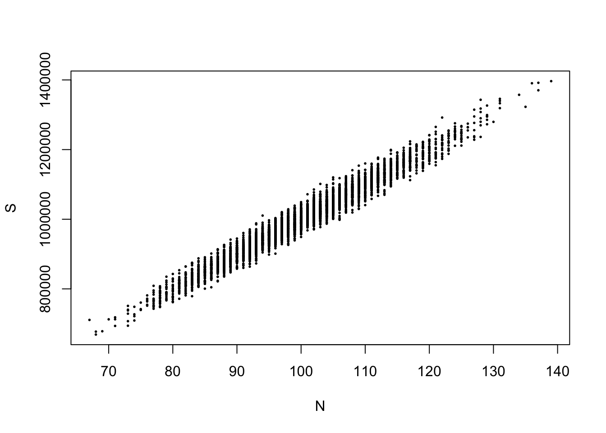
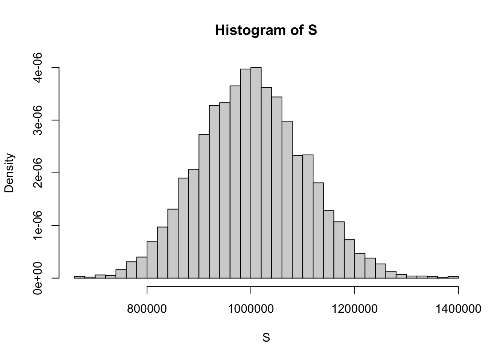

[1] 0.658055[1] 0.658055Due Thursday November 6 at 11:59 PM
An insurance company sells policies in the hope that most customers will not actually file a claim. In that case, the company keeps the premiums, and never actually pays out. Cha-ching. If on the other hand, every customer files a claim, then the company is ruined. They simply don’t keep enough cash on hand to literally pay out all the customers they sell policies to.
This is obviously a risky business. The insurance company is making a bet that most of their customers won’t need the policy that they bought, but there could be surprises. The company is fundamentally uncertain about how many people will file claims, and how big those claims will be. Faced with this uncertainty, they must make decisions about who to sell to, what to charge, and how much cash to keep on hand. To manage the uncertainty and make good decisions, insurance companies hire armies of actuaries to model the insurance market using the basic tools of probability and statistics that we are learning. Let’s get a taste of that.
Imagine the Pacific All-Risk Insurance Company makes its decisions on a monthly basis. Let \(N\in\mathbb{N}\) denote the number of insurance claims the company receives in a given month. Each of those claims will be for some positive dollar amount, call it \(X_i>0\). So each month, customers apply for \(S=X_1+X_2+...+X_N\) in reimbursement from the insurance company. The company is not sure what \(N\) will be, they are not sure how big each \(X_i\) will be, and so they are not sure how big the total \(S\) will be. But if it gets too big, the company is finished. We shall model the number of claims \(N\) and the size of each claim \(X_i\) as random variables using our familiar families:
\[ \begin{aligned} N&\sim\text{Poisson}(\lambda) \\ X_1,\,X_2,\,X_3,\,X_4,\,...&\overset{\text{iid}}{\sim} \text{Gamma}(\alpha,\,\beta)\\ S&=\sum\limits_{i=1}^N X_i \end{aligned} \]
We see that \(S\) is a random sum of random variables. Each \(X_i\) is random, and the number of terms in the sum is also random. So randomness from both the \(X_i\) and \(N\) is feeding forward into the randomness in \(S\), making it more challenging to model.
In what follows, take \(\lambda=100\) and \((\alpha,\,\beta)=(25,\,0.0025)\).
What is the probability that \(N\) is strictly within one standard deviation of its mean? In other words, what is the probability that \(N\) lies in the interval \((E(N)-\text{sd}(N),\,E(N)+\text{sd}(N))\). Use the appropriate p- function to compute this, and pay attention to the endpoints!
\(E(N)=100\) and \(\text{sd}(N)=\sqrt{\text{var}(N)}=\sqrt{100}=10\), so we want \(P(90 < N < 110)\). We can use the cdf, but we have to pay attention to the endpoints. In general, we know:
\[ P(90 < N \leq 110) = F(110) - F(90). \]
Either of these works:
What is the probability that \(N\) is at or above its mean? So, \(P(N\geq E(N))\)?
Since \(E(N)=100\), we want \(P(N\geq 100) = 1 - P(N < 100) = 1 - P(N\leq 99)\):
1 - ppois(99, 100)[1] 0.5132988Write some R code that simulates m = 5000 draws from the joint distribution of \((N,\,S)\). One way to do this is with a for loop that cycles through the following steps:
After the loop is complete, you should have a vector N storing all of the draws of \(N\), and a vector S storing all of the draws of \(S\).
Create a well-labeled scatterplot of the pairs \((N,\,S)\) that you just simulated.
You might want to use the cex argument to the plot function in order to decrease the size of the points. By default cex = 1.
plot(N, S, pch = 19, cex = 0.25)
Plot a histogram of the draws of \(S\) by themselves.
hist(S, freq = FALSE, breaks = "Scott")
Use your draws of \(N\) to estimate the probabilities from Tasks 1 and 2, and verify that you get estimates that are close to the actual probabilities you calculated.
Use the draws of \(S\) to estimate the following quantities:
In our setup, \(N\) and \(S\) are a random pair that is jointly distributed according to the following hierarchy:
\[ \begin{aligned} N&\sim\text{Poisson}(\lambda = 100)\\ S\mid N=n &\sim \,??? \end{aligned} \]
Conditional on \(n\), what is the distribution of \(S\)? You may find results from yesterday’s lecture helpful.
If \(n\) is fixed, then \(S\) is the sum of \(n\) iid gamma random variables, so we know
\[ S\mid N = n \sim \text{Gamma}(n\cdot 25,\,0.0025) \]
Use the tower property to compute the following marginal expected values of \(S\):
The marginal distribution of \(S\) is not recognizable. It’s some funky new thing. By deriving its MGF, you have completely characterized the entire distribution, but it turns out that we don’t have nice clean formulas for the CDF or the PDF. Bummer! But as you saw in previous tasks, we can still simulate the distribution of \(S\) and approximate its properties. Neat!
\[ \begin{aligned} E(S)&=E(E(S\mid N)) \\ &= E\left(\frac{N\cdot 25}{0.0025}\right) \\ &= \frac{25}{0.0025}E\left(N\right) \\ &= E(X_1)E(N) \\ &= 10000\times 100 \\ &= 1000000. \end{aligned} \]
We know \(S\mid N=n\sim\text{Gamma}(n\cdot 25,\,0.0025)\), and we know that \(\text{var}(S|N=n)=n\cdot 25/0.0025^2\), so
\[ E(S^2|N=n)=\text{var}(S|N=n)+E(S|N=n)^2=\frac{n\cdot 25}{0.0025^2}+\frac{n^2\cdot 25^2}{0.0025^2} \]
Tower property again:
\[ \begin{aligned} E(S^2) &=E(E(S^2|N))\\ &= E\left(\frac{N\cdot 25}{0.0025^2}+\frac{N^2\cdot 25^2}{0.0025^2}\right) \\ &= \frac{25}{0.0025^2}E(N)+\frac{25^2}{0.0025^2}E(N^2) \\ &= \frac{25}{0.0025^2}100+\frac{25^2}{0.0025^2}(100+100^2) \end{aligned} \]
(25 / 0.0025^2) * (100 + 25 * (100 + 100^2))[1] 1.0104e+12\[ \begin{aligned} E(e^{tS}) &= E(E(e^{tS}|N)) \\ &=E\left(\left(\frac{0.0025}{0.0025 - t}\right)^{N25}\right)&&\text{gamma mgf} \\ &= \sum\limits_{n=0}^\infty \left(\frac{0.0025}{0.0025 - t}\right)^{n25}\frac{100^n}{n!}e^{-100} && \text{LOTUS} \\ &= e^{-100} \sum\limits_{n=0}^\infty \frac{\left(100\left(\frac{0.0025}{0.0025 - t}\right)^{25}\right)^n}{n!} && \text{taylor series of exponential} \\ &= e^{-100} e^{100\left(\frac{0.0025}{0.0025 - t}\right)^{25}},&& t<0.0025. \end{aligned} \]
Verify that the theoretical mean and variance of \(S\) match the sample estimates you computed from your simulation in Task 7.
In our setup, we assumed that the \(X_i\) were independent.
Go watch Double Indemnity. It is so entertaining it will make your head spin.